MRC microbiome analysis toolbox-A singularity container version
Prepared by MRC bioinformatics team Dr Xiao-Tao Jiang, Dr Emily McGovern and Dr Fan Zhang
Date: 2020-09-15
Due to complex dependency and version conflicts, bioinformaticians are strugglying about installation of different tools and solving their dependence relationship and debuging while version conflicts happens. To solve this problem and establish a comprehensive, mobile and easy to use framwork for microbiome analysis to beginners, we build this MRC microbiome singularity image. This document describe the interface for different aspects of analysis using a demo example and the mrcmicrobiome.sif singularity image.
MRC microbiome analysis toolbox-A singularity container version
- Understand the demo data set * Overview
- Singularity on katana
- Check the demo and database db directory
- QIIME2 manifest file preparation, example below
- Prepare manifest and run dada2 * Overview
- Overall assessment of quality of sequences with fastp
- Import fasta sequences into demux.qza
- Running dada2 within qiime2 to perform quality control, this takes about 1 minute
- Host contamination removal if necessary when processing mucosal samples * Overview
16S amplicon data analysis
In this tutorial, we use singularity version of the pipeline mrcmircobiome.sif to run a high fat diet mouse model stool microbiome analysis. The demo dataset includes stools samples from mice on divergent diets: high fat diet v normal chow. Using this demo dataset, users will learn:
- How to prepare data for analysis
- Quality control of amplicon sequences
- Taxonomic annotation of 16S rRNA sequences
- Alpha and beta diversity analysis
- Differential abundant analysis using Linear discriminant analysis Effect Size LEfSe
Prerequisites
You’ll need a laptop with a web browser and a terminal. See also the Setup page.
You'll need a katana account for the training/have the the singularity file mrcmicrobiome.sif (This file is already on katana)
You might want to brush up on the fundamentals of the Linux Shell for HPC.
Structure
This tutorial has been designed in a modular way. Modules are categorised as follows:
- Basic linux and setup prerequest environment
- 16S microbiome analysis: taxonomy, alpha, beta diversity analysis and basic statistical analysis
- Microbial signatures identification with LEfSe
Once you’ve gone through this tutorial, you will be able to analyze 16S amplicon sequences microbiome data You can refer to QIIME2, DADA2, Mothur, UPARSE and Phyloseq for more information
Schedule
| Setup | ||
|---|---|---|
| 10:00 - 10:30 am | 1. Linux and HPC setup and data transfer | |
| 10:40 - 12:00 am | 2. Introduce of demo data set and quality control | |
| 13:30 - 14:30 Pm | 3. Taxonomy, phylogenetic tree, alpha and beta diversity analysis | |
| 14:50 - 15:30 Pm | 4. LEfSe to identify microbial signatues |
The actual schedule may vary slightly depending on the topics and exercises chosen by the instructor.
1. Linux and HPC setup
Overview
Teaching: 30 min Exercises: 0 min
Objectives
- Learn basic linux commands and HPC
- Learn how to transfer data from HPC to local computers
Katana | UNSW Research
Katana is a shared computational cluster located on campus at UNSW that has been designed to provide easy access to computational resources for groups working with non-sensitive data. Katana will be used for your next generation sequencing analysis.
Log on to Katana
Log on from Iterm (Mac)
Download a terminal in order to log on to a remote terminal e.g. Iterm (Mac) or mobaxterm (Windows)
ssh zID@katana.restech.unsw.edu.au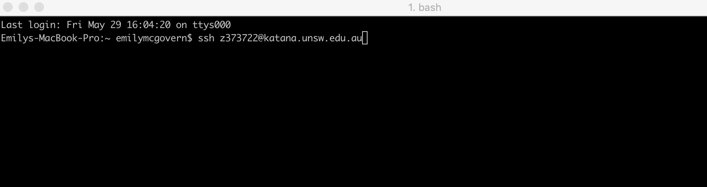
Log on from Mobaxterm (Windows)

Working on Katana
Always create an interactive job to work on Katana - Do not run jobs on head node
xxxxxxxxxxqsub -I -q R717942 -l nodes=1:ppn=1,mem=10gb,walltime=6:00:00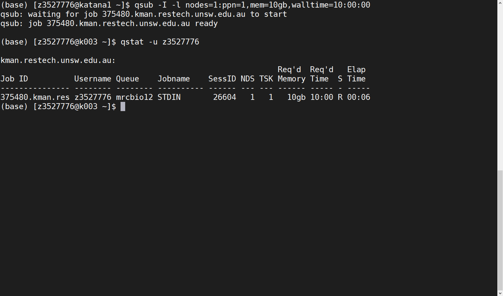
Navigating Katana
Check your filepath
xxxxxxxxxxpwdMove into your personal scratch directory. Always create an interactive job to work on Katana - Do not run jobs on head node
xxxxxxxxxxcd /srv/scratch/zIDList what is in your filepath
xxxxxxxxxxlsMake a new directory called bio_tutorial
xxxxxxxxxxmkdir bio_tutorialMove into the bio_tutorial directory
xxxxxxxxxxcd bio_tutorialMove back a directory
xxxxxxxxxxcd ..Data upload
On your desktop and open notepad and create a file with the following text and save to your desktop as test_file.txt
xxxxxxxxxx-8ACCGGB@=8=6BCFFCDEFGFGGGGGGGGGGGGGGFFGF@C@CFGGGFCCBFGGGFGCFGGGFGDCFGGFGGGGGFFCGFFGDFCGGCGGCC<EBFFGFBBE<EFFGEEFGG?<F9?E7++8+,,:<?<,=++@:FEGGD9F@7F7>=F;8FFG@7FFCFCFFCCBCF8>DFCFEBFGGFGGDC:F:*<F7<F,4<B9C*CCCACEFFEGC:EE:CE**A89CFCFCC=C5**<+55;C*CCE=EC>C58?F7:@7<:<>+37:C7C99@E77C:<C*;++8:735B))8@36>>BC?)@M01153:567:000000000-CNVPV:1:1101:23398:1773 1:N:0:GCTCATGA+GCGTAAGACCTACGGGGGGCAGCAGTAGGGAATCTTCGGCAATGGACGAAAGTCTGACCGAGCAACGCCGCGTGAGTGAAGAAGGTTTTCGGATCGTAAAACTCTGTTGTTAGAGAAGAACAAGGACGTTAGTAACTGAACGTCCCCTGACGGTATCTAACCAGACAGCCACGGCTAACTACGTGCCAGCAGCCGCGGTAATACGTAGGTGGCCAGCGTTGTCCGGTTTTATTGGGCGTAAAGCGAGCGCAGGCGGTTTCTTAAGTCTGATGTGAAAGCCCCCGGCTCAACCGGGGAGGGTCATTGGTTNext let's upload this file to your scratch drive on Katana using Katana data Mover
Open FileZilla
- Enter the following details in the top tool bar
- Hostname =
ssh zID@kdm.restech.unsw.edu.au - Username = zID
- Password = zID password
- Port = 22
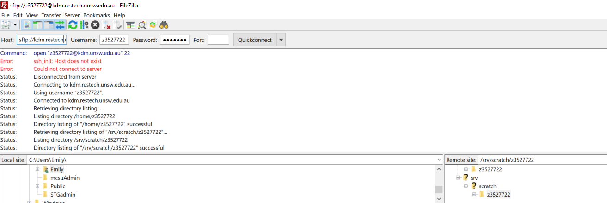
Enter remote site filepath
- Once your logged on add
/srv/scratch/zIDto the bar sayingremote site
Uploading file
Copy test_file.txt into your /srv/scratch/zID
Futher Navigation of Katana
xxxxxxxxxxcp test_file.txt bio_tutorial/Move into bio_tutorial directory
xxxxxxxxxxcd bio_tutorial/Now lets list whats in the bio_tutorial directory
xxxxxxxxxxls Duplicate the file
xxxxxxxxxxcp test_file.txt test_file2.txtList all files with the suffix .txt
xxxxxxxxxxls *.txtRemove test_file2.txt
xxxxxxxxxxrm test_file2.txtLook inside test_file.txt
xxxxxxxxxxless test_file.txtMove back into scratch directory
xxxxxxxxxxcd ..Delete bio_tutorial
xxxxxxxxxxrm -r bio_tutorial/Further Training
UNSW research technology offer a range of training courses, that as of 2020 have been moved online. These are a great introduction to general programming and will help you improve the efficiency of your work. Explore them here
Introduce yourself to basic linux command using an online course
Reference Linux commands
Use this table as a reference during the workshop
| Command | Meaning | Example |
|---|---|---|
ls | list files in current directory, with -l, it also displays file permissions, sizes and last updated date/time | ls -l, ls |
pwd | displays your current location in the file system | pwd |
env | displays your user environment settings (e.g. search path, history size and home directory) | env |
cd | change directory | cd /file/path |
mv | move file, change file name - Careful with this, no undo! | mv /path/file/ /newpath/file , mv oldname newname |
cp | copy files, -R copy directory | cp /path/file/ /newpath/file, cp -R ./directory ./newdirectorylocation |
head | print top lines in file | head filename , head -10 filename |
tail | print last lines in file | tail filename , tail -10 filename |
less | view lines in file, use spacebar to go down file | less filename |
grep | search file for pattern or string | cat filename |grep "aaatttcc" |
* | wildcard, use with other commands | ls *.fastq : list all files with suffix ".fastq" |
wc | word count, with -l = linecount | wc filename, wc -l filename |
rm | remove filename , with -R directory Again careful | rm filenmae |
exit | exit remote server | exit |
. | This represents the current directory | pwd ., cd ./path/to/subdirectory/from/currentdir |
.. | This represents the parent directory | pwd .., cd ../path/to/subdirectory/from/parentdir |
Table:Useful everyday commands
Text editing from the command line
When learning bioinformatics, you will most likely need to create or edit text files, shell scripts or Python scripts from the command line. Using a Unix-based text editor good practice for getting used to the environment if you are new to the command line.
There are multiple text editors available. Which one you use is based on user preference, beginners usually go for nano or vim.
Text Editors
- nano
- vim
- emacs
User Guides
Useful Tip
If using vim and you are stuck in a wrong mode etc, you can always escape using by pressing ESC followed by :q! and this will allow you exit without saving any changes.
2. Quality control
Understand the demo data set
Overview
Teaching: 10 min Exercises: 0 min
Objectives
- Download the demo data set
- Understand the meta data file and learn how to prepare it
Using the FTP software to upload the demo data set and the relevant meta data file to your HPC account
Singularity on katana
login to compute nodes to run jobs.
xxxxxxxxxxqsub -I -q R717942 -l nodes=1:ppn=1,mem=10gb,walltime=6:00:00mrcmicrobiome singularity sif have conda, qiime2-2020.8 and lefse installed, all the relevant dependence are resolved. Copy the demo data set to your own work directory
Check the singularity image file /data/bio/workshop/mrcmicrobiome.sif
Using the following command to create the wrok directory and copy the demo data set to your directory Remember to replace the yourzID with your zID
x#create the hfdiet working directory mkdir /srv/scratch/yourzID/hfdiet#enter into the directorycd /srv/scratch/yourzID/hfdiet#copy the demo data set into your work directorycp -r /data/bio/workshop/demo/ /srv/scratch/yourzID/hfdietCheck the demo and database db directory
There are in total 16 samples in the demo, this demo compare mice stool microbiome with normal and high fat diet chow check the meta_data.txt file, you can find the samples information
xxxxxxxxxx[z3524677@katana2 hfdiet]$ tree demo/#output demo/|-- all_r1.fq|-- all_r2.fq|-- meta_data.txt`-- rawfq |-- 5821_S50_L001_R1.fastq.gz |-- 5821_S50_L001_R2.fastq.gz |-- 5822_S34_L001_R1.fastq.gz |-- 5822_S34_L001_R2.fastq.gz |-- 5824_S96_L001_R1.fastq.gz |-- 5824_S96_L001_R2.fastq.gz |-- 5825_S7_L001_R1.fastq.gz |-- 5825_S7_L001_R2.fastq.gz |-- 5832_S8_L001_R1.fastq.gz |-- 5832_S8_L001_R2.fastq.gz |-- 5833_S78_L001_R1.fastq.gz |-- 5833_S78_L001_R2.fastq.gz |-- 5859_S27_L001_R1.fastq.gz |-- 5859_S27_L001_R2.fastq.gz |-- 5860_S122_L001_R1.fastq.gz |-- 5860_S122_L001_R2.fastq.gz |-- 5862_S51_L001_R1.fastq.gz |-- 5862_S51_L001_R2.fastq.gz |-- 5863_S30_L001_R1.fastq.gz |-- 5863_S30_L001_R2.fastq.gz |-- 6319_S128_L001_R1.fastq.gz |-- 6319_S128_L001_R2.fastq.gz |-- 6320_S67_L001_R1.fastq.gz |-- 6320_S67_L001_R2.fastq.gz |-- 6321_S20_L001_R1.fastq.gz |-- 6321_S20_L001_R2.fastq.gz |-- 6322_S131_L001_R1.fastq.gz |-- 6322_S131_L001_R2.fastq.gz |-- 6328_S93_L001_R1.fastq.gz |-- 6328_S93_L001_R2.fastq.gz |-- 6329_S37_L001_R1.fastq.gz `-- 6329_S37_L001_R2.fastq.gz Check meta data file
xxxxxxxxxx#enter into your own directory cd demo/#show the contents of the meta data file [z3524677@katana2 demo]$ cat meta_data.txt#SampleID LANID Diet6319_S128_L001 fvb-a Normal6320_S67_L001 fvb-a Normal6321_S20_L001 fvb-b Normal6322_S131_L001 fvb-b Normal6328_S93_L001 fvb-c Normal6329_S37_L001 fvb-c Normal5821_S50_L001 181-1 HFD5822_S34_L001 181-1 HFD5824_S96_L001 181-2 HFD5825_S7_L001 181-2 HFD5832_S8_L001 181-3 HFD5833_S78_L001 181-3 HFD5859_S27_L001 181-4 HFD5860_S122_L001 181-4 HFD5862_S51_L001 181-5 HFD5863_S30_L001 181-5 HFDCheck the database folder
xxxxxxxxxxtree /data/bio/workshop/db/#output /data/bio/workshop/db|-- gg-v3v4-classifier.qza|-- gg-v4-classifier.qza|-- mouse.genome.bowtie2.1.bt2|-- mouse.genome.bowtie2.2.bt2|-- mouse.genome.bowtie2.3.bt2|-- mouse.genome.bowtie2.4.bt2|-- mouse.genome.bowtie2.rev.1.bt2`-- mouse.genome.bowtie2.rev.2.bt2QIIME2 manifest file preparation, example below
xxxxxxxxxxsample-id,absolute-filepath,direction5821_S50_L001,/srv/scratch/z3524677/hfdiet/demo/rawfq//5821_S50_L001_R1.fastq.gz,forward5821_S50_L001,/srv/scratch/z3524677/hfdiet/demo/rawfq//5821_S50_L001_R2.fastq.gz,reverse5822_S34_L001,/srv/scratch/z3524677/hfdiet/demo/rawfq//5822_S34_L001_R1.fastq.gz,forward5822_S34_L001,/srv/scratch/z3524677/hfdiet/demo/rawfq//5822_S34_L001_R2.fastq.gz,reverse5824_S96_L001,/srv/scratch/z3524677/hfdiet/demo/rawfq//5824_S96_L001_R1.fastq.gz,forward5824_S96_L001,/srv/scratch/z3524677/hfdiet/demo/rawfq//5824_S96_L001_R2.fastq.gz,reverse5825_S7_L001,/srv/scratch/z3524677/hfdiet/demo/rawfq//5825_S7_L001_R1.fastq.gz,forward5825_S7_L001,/srv/scratch/z3524677/hfdiet/demo/rawfq//5825_S7_L001_R2.fastq.gz,reverse5832_S8_L001,/srv/scratch/z3524677/hfdiet/demo/rawfq//5832_S8_L001_R1.fastq.gz,forward5832_S8_L001,/srv/scratch/z3524677/hfdiet/demo/rawfq//5832_S8_L001_R2.fastq.gz,reversePrepare manifest and run dada2
Overview
Teaching: 10 min Exercises: 0 min
Objectives
- Generate quality control shell scripts with mima_prepare_manifest_and_qc.pl
- Understand how to perform quality control with dada2
xxxxxxxxxx[z3524677@katana2 demo]$ singularity exec --cleanenv /data/bio/workshop/mrcmicrobiome.sif bash -c 'perl /home/applications/mima/mima_prepare_manifest_and_qc.pl'perl /home/applications/mima/mima_prepare_manifest_and_qc.pl <Absolute path to store fastq files> <output.manifest> <total_1.fq> <total_2.fq> <outputdir> <# of threads> <Singularity_sif> <inputdir_abs_path> The absolute directory to store the pair-end fastq files <output.manifest> The manifest file that qiime needed when running dada2 <Merged_1.fq> The overall fastq file pair 1 <Merged_2.fq> The overall fastq file pair 2 <Output_dir> Output directory store all the QC files and dada2 output <#ofthreads> Deafault 1 <Singularity sif img> the singualrity image to useRun the one comman pipeline to generate all the necessary scripts. This one command will generate all the necessary scripts for the QC analysis. You can submit this as a job or run each command individually in an interactive job. As QC can take time, it's advisable to submit all the commands as a job qsub qc.pbs. For learning purposes today we will go through each command and it's output in an interactive model as the demo small
Remember to change the zID to your own zID
xxxxxxxxxx#run the command to generate commands for quality control #Absolute path should be used input and output directory [z3524677@katana2 demo]$ singularity exec --cleanenv /data/bio/workshop/mrcmicrobiome.sif bash -c 'perl /home/applications/mima/mima_prepare_manifest_and_qc.pl /srv/scratch/z3524677/hfdiet/demo/rawfq/ /srv/scratch/z3524677/hfdiet/demo/hf_d.manifest all_r1.fq all_r2.fq /srv/scratch/z3524677/hfdiet/demo/hf_qc 1 /data/bio/workshop/mrcmicrobiome.sif'xxxxxxxxxx[z3524677@katana2 demo]$ tree hf_qc/hf_qc/|-- hf_d.manifest`-- qc.pbsCheck the commands generated
xxxxxxxxxx[z3524677@katana2 demo]$ cat hf_qc/qc.pbs#PBS -l nodes=1:ppn=1#PBS -l mem=80gb#PBS -l walltime=100:00:00export LC_ALL=en_AU.utf8export LANG=en_AU.utf8cd /srv/scratch/z3524677/hfdiet/demo/hf_qcsingularity exec /data/bio/workshop/mrcmicrobiome.sif bash -c ' fastp -i all_r1.fq -I all_r2.fq -o /srv/scratch/z3524677/hfdiet/demo/hf_qc/ALL_R1.fq -O /srv/scratch/z3524677/hfdiet/demo/hf_qc/ALL_R2.fq -h /srv/scratch/z3524677/hfdiet/demo/hf_qc/fastp.outreport.html'singularity exec /data/bio/workshop/mrcmicrobiome.sif bash -c '. activate qiime2-2020.8 && qiime tools import --type 'SampleData[PairedEndSequencesWithQuality]' --input-path /srv/scratch/z3524677/hfdiet/demo/hf_d.manifest --output-path demux.qza --input-format PairedEndFastqManifestPhred33'singularity exec /data/bio/workshop/mrcmicrobiome.sif bash -c '. activate qiime2-2020.8 && qiime dada2 denoise-paired --i-demultiplexed-seqs demux.qza --p-trunc-len-f 295 --p-trunc-len-r 220 --p-trim-left-f 17 --p-trim-left-r 21 --p-n-threads 1 --o-representative-sequences rep-seqs.qza --o-table table.qza --o-denoising-stats stats-dada2.qza'Files in the folder after running the mima_prepare_manifest_and_qc.pl script. Now a file 'hf_d.manifest' and a folder 'hf_qc' are newly created.
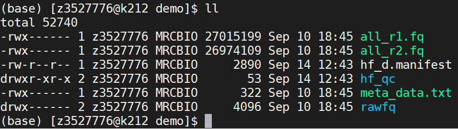
Overall assessment of quality of sequences with fastp
Prior to importing data into QIIME, the data will be assessed with Fastp. This step functions to assess overall sequence quality. Output information will be in a html format and will include: Run Fastp to assess the overall quality of the sequences.
xxxxxxxxxx[z3524677@katana2 demo]$ singularity exec /data/bio/workshop/mrcmicrobiome.sif bash -c 'fastp -i all_r1.fq -I all_r2.fq -o hf_qc/ALL_R1.fq -O hf_qc/ALL_R2.fq -h hf_qc/fastp.outreport.html'bash: warning: setlocale: LC_ALL: cannot change locale (en_AU.utf8)Read1 before filtering:total reads: 40000total bases: 12022031Q20 bases: 10726471(89.2235%)Q30 bases: 9355072(77.8161%)Read2 before filtering:total reads: 40000total bases: 12001486Q20 bases: 9746062(81.2071%)Q30 bases: 8306044(69.2085%)Read1 after filtering:total reads: 38912total bases: 11695532Q20 bases: 10522964(89.9742%)Q30 bases: 9202096(78.6804%)Read2 aftering filtering:total reads: 38912total bases: 11674221Q20 bases: 9568399(81.9618%)Q30 bases: 8182633(70.0915%)Filtering result:reads passed filter: 77824reads failed due to low quality: 1952reads failed due to too many N: 224reads failed due to too short: 0reads with adapter trimmed: 24bases trimmed due to adapters: 1575Duplication rate: 22.3048%Insert size peak (evaluated by paired-end reads): 460JSON report: fastp.jsonHTML report: /srv/scratch/z3524677/hfdiet/demo/hf_qc/fastp.outreport.htmlCheck the output directory
xxxxxxxxxx[z3524677@katana2 demo]$ ls -lh hf_qc/ total 51M-rw-r--r--. 1 z3524677 unsw 26M Sep 9 12:09 ALL_R1.fq-rw-r--r--. 1 z3524677 unsw 26M Sep 9 12:09 ALL_R2.fq-rw-r--r--. 1 z3524677 unsw 436K Sep 9 12:09 fastp.outreport.html-rw-r--r--. 1 z3524677 unsw 2.9K Sep 9 12:02 hf_d.manifest-rw-r--r--. 1 z3524677 unsw 1.1K Sep 9 12:02 qc.pbsFastp Output explained:
- Insert size is the length of DNA that you want to sequence and that is inserted between the adapters (adapters excluded).
- Total reads refer to the total number of reads generated by the sequencing run
- Total bases refer to the total number of nucleotide bases sequenced during the sequencing run
- Quality Scores for Next-Generation Sequencing (NGS) assessing sequencing accuracy using Phred quality scoring (Q score). Low Q scores can increase false-positive variant calls, which can result in inaccurate conclusions and higher costs for validation experiments.
| Phred Quality | Score Probability of incorrect bases call | Base call accuracy |
|---|---|---|
| 10 | 1 in 10 | 90% |
| 20 | 1 in 100 | 99% |
| 30 | 1 in 1000 | 99.9% |
Table: Phred Quality table
Check the quality of the overall sequences in the fastp.outreport.html after downloading to local computer
fastp.outreport.html open on local browser
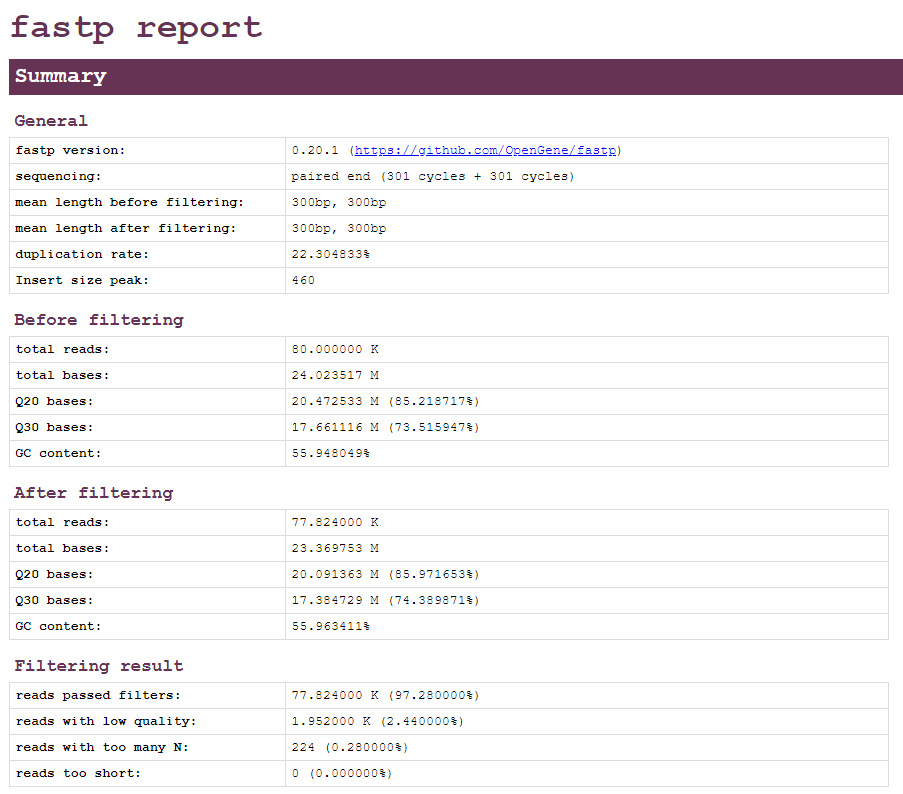
Determine the trim location at read1 and read2 For Miseq reads, usually the quality of bases decrease dramatically while towarding to the end of the reads, in order to loss less sequences during merge of pair end reads, it is better operation to trim the end of reads.
Read1, to keep higher quality bases, the trim location is set to 295 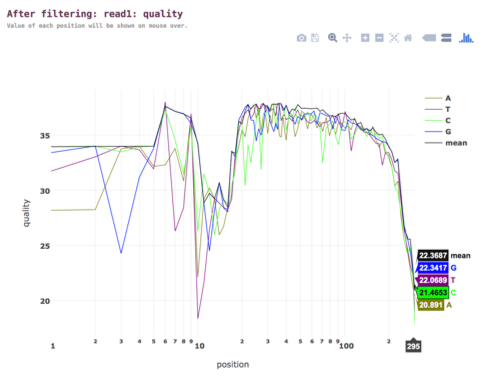
Read2, to keep higher quality bases, the trim locaiton is set to 220
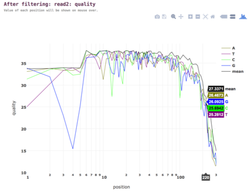
Import fasta sequences into demux.qza
xxxxxxxxxx[z3524677@katana2 demo]$ singularity exec /data/bio/workshop/mrcmicrobiome.sif bash -c '. activate qiime2-2020.8 && \qiime tools import \ --type 'SampleData[PairedEndSequencesWithQuality]' \ --input-path hf_d.manifest \ --output-path demux.qza \ --input-format PairedEndFastqManifestPhred33'Imported /srv/scratch/z3524677/hfdiet/demo/hf_d.manifest as PairedEndFastqManifestPhred33 to demux.qzaPay attention to the PATH of the input and output files in the command, make sure it is your PATH, e.g., /srv/scratch/'yourzID'/hfdiet/demo/hf_d.manifest. A file 'demux.qza' is newly generated.
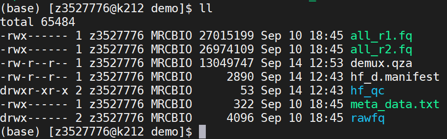
Running dada2 within qiime2 to perform quality control, this takes about 1 minute
Run dada2 to trim end low quality bases, remove chimera sequencing and merge pair-end sequences, generate feature tables and statistics output of the results
xxxxxxxxxx [z3524677@katana2 demo]$ singularity exec /data/bio/workshop/mrcmicrobiome.sif bash -c '. activate qiime2-2020.8 && \ qiime dada2 denoise-paired \ --i-demultiplexed-seqs demux.qza \ --p-trunc-len-f 295 \ --p-trunc-len-r 220 \ --p-trim-left-f 17 \ --p-trim-left-r 21 \ --p-n-threads 1 \ --o-representative-sequences rep-seqs.qza \ --o-table table.qza --o-denoising-stats stats-dada2.qza' Saved FeatureTable[Frequency] to: table.qza Saved FeatureData[Sequence] to: rep-seqs.qza Saved SampleData[DADA2Stats] to: stats-dada2.qzaThree files: 'table.qza', 'rep-seqs.qza' and 'stats-dada2.qza' are newly generated.
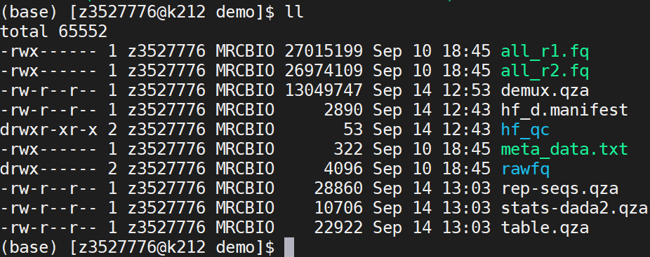
Decompress stats-dada2.qza and check the quality details:
xxxxxxxxxxsingularity exec /data/bio/workshop/mrcmicrobiome.sif bash -c '. activate qiime2-2020.8 && \qiime tools export \ --input-path stats-dada2.qza \ --output-path stats-dada2' Dada2 stats
- The input column refers to the sequence reads imported into QIIME2 from the initial QC filtration.
- Sequence reads are then filtered/denoised using parameters set by user. These are determined based on sequence 16SrRNA gene region amplified and quality assessment from the fastp report.
- The merge column (only present for paired end samples) refers to the number of the forward and reverse reads which were successfully merged together to obtain the full denoised sequences. Merging is performed by aligning the denoised forward reads with the reverse-complement of the corresponding denoised reverse reads, and then constructing the merged “contig” sequences. By default, merged sequences are only output if the forward and reverse reads overlap by at least 12 bases, and are identical to each other in the overlap region.
- The non-chimeric column refers to the number of sequences remaining after chimera removal. Chimeras are artifactual PCR product/amplicon generated erroneously from more than one DNA template. It is well-known that chimeras are inevitable when preparing amplicon sequencing libraries for NGS. It is therefore important to detect and filter them out before any types of microbiome analyses.
Look into the quality details:
xxxxxxxxxxcat stats-dada2/stats.tsv#output:sample-id input filtered percentage of input passed filter denoised merged percentage of input merged non-chimeric percentage of input non-chimeric#q2:types numeric numeric numeric numeric numeric numeric numeric numeric5821_S50_L001 2500 1337 53.48 1215 1089 43.56 1073 42.925822_S34_L001 2500 1467 58.68 1364 1256 50.24 1243 49.725824_S96_L001 2500 1312 52.48 1203 1100 44 1098 43.925825_S7_L001 2500 1365 54.6 1268 1131 45.24 1116 44.645832_S8_L001 2500 1350 54 1229 1069 42.76 1058 42.325833_S78_L001 2500 1218 48.72 1092 881 35.24 877 35.085859_S27_L001 2500 1279 51.16 1138 994 39.76 987 39.485860_S122_L001 2500 1449 57.96 1344 1229 49.16 1225 495862_S51_L001 2500 1232 49.28 1121 1000 40 998 39.925863_S30_L001 2500 1371 54.84 1263 1140 45.6 1133 45.326319_S128_L001 2500 1248 49.92 1176 1025 41 987 39.486320_S67_L001 2500 1283 51.32 1180 985 39.4 951 38.046321_S20_L001 2500 1339 53.56 1190 973 38.92 932 37.286322_S131_L001 2500 1466 58.64 1339 1116 44.64 1045 41.86328_S93_L001 2500 1531 61.24 1420 1256 50.24 1146 45.846329_S37_L001 2500 1327 53.08 1217 1012 40.48 1000 40**Determine the depth to normalize for alpha and beta diversity comparison By analyzing the depth of clean sequences of all the samples, 800 is decided as the cut off for normalization to keep all samples.
Contents of two important files rep-seqs.qza and table.qza
rep-seqs.qza
xxxxxxxxxxsingularity exec /data/bio/workshop/mrcmicrobiome.sif bash -c '. activate qiime2-2020.8 && \qiime tools export \ --input-path rep-seqs.qza \ --output-path rep-seqs'#Exported rep-seqs.qza as DNASequencesDirectoryFormat to directory rep-seqsLook the feature sequences
xxxxxxxxxxhead -4 rep-seqs/dna-sequences.fasta#output: >dfa833b266bd2993b86feab3617b34c3TCGAGAATCATTCACAATGGGGGAAACCCTGATGGTGCGACGCCGCGTGGGGGAATGAAGGTCTTCGGATTGTAAACCCCTGTCATGTGGGAGCAAATTAAAAAGATAGTACCACAAGAGGAAGAGACGGCTAACTCTGTGCCAGCAGCCGCGGTAATACAGAGGTCTCAAGCGTTGTTCGGAATCACTGGGCGTAAAGCGTGCGTAGGCTGTTTCGTAAGTCGTGTGTGAAAGGCGCGGGCTCAACCCGCGGACGGCACATGATACTGCGAGACTAGAGTAATGGAGGGGGAACCGGAATTCTCGGTGTAGCAGTGAAATGCGTAGATATCGAGAGGAACACTCGTGGCGAAGGCGGGTTCCTGGACATTAACTGACGCTGAGGCACGAAGGCCAGGGGAGCGAAAG>f67a6d5da8c0b71206955aeae1505a74TGAGGAATATTGGTCAATGGTCGGGAGACTGAACCAGCCAAGCCGCGTGAGGGAAGAAGGTACAGCGTATCGTAAACCTCTTTTGCCGGGGAACAAGAGCTTCCACGAGTGGGAGTGTGAGCGTACCCGGAGAAAAAGCATCGGCTAACTCCGTGCCAGCAGCCGCGGTAATACGGAGGATGCGAGCGTTATCCGGATTTATTGGGTTTAAAGGGTGCGTAGGCGGCGAGTTAAGTCAGCGGTAAAAGCCCGGGGCTCAACCCCGGCCCGCCGTTGAAACTGGCTGGCTTGAGTTGGGGAAAGGCAGGCGGAATGCGCGGTGTAGCGGTGAAATGCATAGATATCGCGCAGAACCCCGATTGCGAAGGCAGCCTGCCGGCCCCACACTGACGCTGAGGCACGAAAGCGTGGGTATCGAACAtable.qza
xxxxxxxxxxsingularity exec /data/bio/workshop/mrcmicrobiome.sif bash -c '. activate qiime2-2020.8 && \qiime tools export \ --input-path table.qza \ --output-path table'#Exported table.qza as BIOMV210DirFmt to directory table#convert biom file to tsv file singularity exec /data/bio/workshop/mrcmicrobiome.sif bash -c '. activate qiime2-2020.8 && \biom convert -i table/feature-table.biom -o table/feature-table.txt --to-tsv'Look into the table matrix file, the numbers in the table are abundance of that feature sequences in different samples
xxxxxxxxxxhead -4 table/feature-table.txt#output:# Constructed from biom file#OTU ID 5821_S50_L001 5822_S34_L001 5824_S96_L001 5825_S7_L001 5832_S8_L001 5833_S78_L001 5859_S27_L001 5860_S122_L001 5862_S51_L001 5863_S30_L001 6319_S128_L001 6320_S67_L001 6321_S20_L001 6322_S131_L001 6328_S93_L001 6329_S37_L001dfa833b266bd2993b86feab3617b34c3 193.0 186.0 271.0 290.0 208.0 176.0 210.0 322.0 223.0 230.0 140.0 63.0 54.0 117.0 0.0 0.0f67a6d5da8c0b71206955aeae1505a74 55.0 126.0 72.0 85.0 57.0 39.0 46.0 51.0 48.0 36.0 131.0 35.0 38.0 0.0 109.0 14.0
Host contamination removal if necessary when processing mucosal samples
Overview
Teaching: 10 min Exercises: 0 min
Objectives
- Understand why there are contamination in the amplicons data
- Finish the commands to decontamination
Although the sequencing target is the 16S hyper variable region PCR products, the data generated by Ramaciotti sometimes includes host contaminations. Hence, we need to remove the host sequences in the table.qza and rep-seq.qza, and update the stats-dada2.qza again to check the percentage of host contamination.
Check the help information for mima_decontaminate_host.pl
xxxxxxxxxx[z3524677@katana2 demo]$ singularity exec /data/bio/workshop/mrcmicrobiome.sif bash -c '. activate qiime2-2020.8 && perl /home/applications/mima/mima_decontaminate_host.pl 'perl /home/applications/mima/mima_decontaminate_host.pl <rep_seqs.qza> <table.qza> <outputdir> <host_genome.fa_bowtie2_index> <threads> <rep_seqs.qza> qiime format represntative sequences output from dada2 <table.qza> qimme format features table <outputdir> output directory to store the decontaminated updated rep_seqs.qza and table.qza <host_genome.fa_bowtie2_index> bowtie2 index of the host genome <threads> number of threads used in bowtie2 mapping This script use bowtie2 to maping the rep_seqs.qza aganist host genome to identify the contaminated sequences and update the sequences and table with qiime2. The updated files can be used for downstream analysis.Run the decontamination script to generate the bash file and run the analysis with singularity
xxxxxxxxxx[z3524677@katana2 demo]$ singularity exec /data/bio/workshop/mrcmicrobiome.sif bash -c '. activate qiime2-2020.8 && perl /home/applications/mima/mima_decontaminate_host.pl rep-seqs.qza table.qza hf_host_decontamination /data/bio/workshop/db/mouse.genome 1'[z3524677@katana2 demo]$ ls hf_host_decontamination/decontaminationhost.shA folder 'hf_host_decontamination/' is newly creatd, with one file 'decontaminationhost.sh' in it.
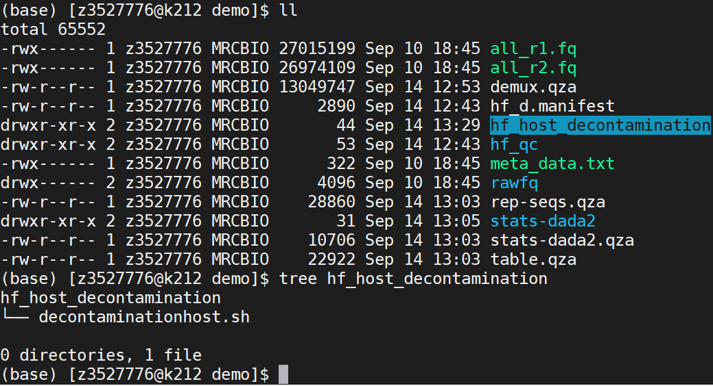
Execute the shell commands
xxxxxxxxxxsingularity exec /data/bio/workshop/mrcmicrobiome.sif bash -c '. activate qiime2-2020.8 && sh hf_host_decontamination/decontaminationhost.sh'Aftering running the decontamination pipeline, we get an updated rep-seqs.qza and table.qza
Explain of the output folder
- The file 'align-hostgenome.sam.txt' in folder 'rep-seqsold' holds the mapping info of the fasta sequences in 'dna-sequences.fasta'. Due to the small size of the demo data, there is no host reads detected therefore no record in 'align-hostgenome.sam.txt'.
- The file 'metadata.table.txt' holds the IDs of the fasta sequences that are mapped to host reference, therefore there is no record in this file, either.
- The file 'filtered_dnaseqs.fasta' has the fasta sequences that are not mapped to host reference, therefore we shall focus on this file in the downstream analysis.
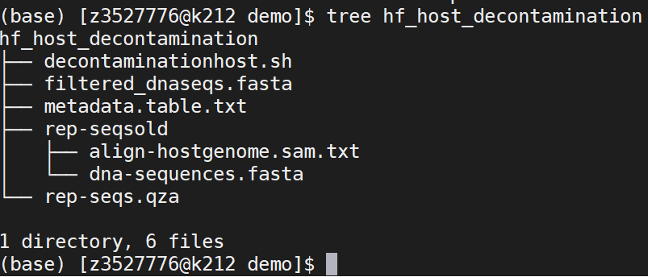
3. Taxonomy annotation and diversity analysis
Overview
Teaching: 60 min Exercises: 0 min
Objectives
- Running diversity analysis pipeline and taxonomy annotation, alpha and beta diversity analysis
- Understand how to interpret the output
Taxonomy annotation of rep-seqs.qza with naive bayesian classifier, for this part analysis, we have a comprehensive pipeline script, it can generate a series of commands that can finish different analysis, we firstly run this pipeline and then go to details of each part of the flow.
Create a directory hf_diver under the demo directory and copy the updated rep-seqs.qza and table.qza into this folder
xxxxxxxxxx#make the diversity output directorymkdir hf_diver#move the two files feature table and featues sequences into the hf_diver directory cp rep-seqs.qza hf_diver/cp table.qza hf_diver/Execute taxonomy annotation and diversity analysis pipeline command
xxxxxxxxxxsingularity exec /data/bio/workshop/mrcmicrobiome.sif bash -c '. activate qiime2-2020.8 && \perl /home/applications/mima/mima_diversity-basic-statistic.pl \ -m meta_data.txt \ -c /data/bio/workshop/db/gg-v3v4-classifier.qza \ -n 1 \ -d 800 \ -o hf_diver'The mama_diversity-basic-statistic.pl pipeline will generate a shell file beta-diversity-commands.sh, which includes all the taxonomical, alpha, beta diversity analysis . A file beta-diversity-commands.sh and a folder hf_diver are newly generated.
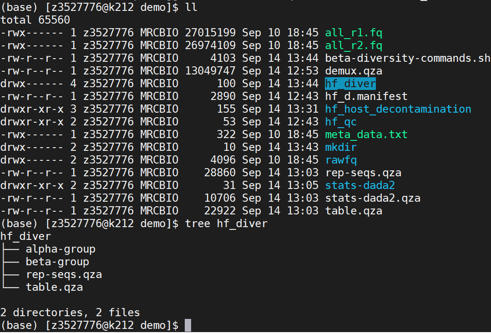
Run the above diversity analysis in batch model (This command run the pipeline)
xxxxxxxxxx#Run the analysis in batch model, the /scratch should be bind for this function, the database directory should be bind as well to get access to classifier database singularity exec -B /data/bio/workshop/db/,/scratch /data/bio/workshop/mrcmicrobiome.sif bash -c '. activate qiime2-2020.8 && sh beta-diversity-commands.sh 'Taxonomy assignment of feature sequences
Overview
Teaching: 10 min Exercises: 0 min
Objectives
- Understand what is a phylogenetic tree and the purpuse of why we need this
- Finish the commands to generate rooted tree
xxxxxxxxxx#taxonomy assignment of feature representative sequencessingularity exec -B /data/bio/workshop/db/ /data/bio/workshop/mrcmicrobiome.sif bash -c '. activate qiime2-2020.8 && \qiime feature-classifier classify-sklearn \ --i-classifier /data/bio/workshop/db/gg-v3v4-classifier.qza \ --i-reads hf_diver/rep-seqs.qza \ --o-classification hf_diver/taxonomy.qza' Check the contents of the taxonomy.qza by decompress it and view it
Decompress hf_diver/taxonomy.qza
xxxxxxxxxxsingularity exec /data/bio/workshop/mrcmicrobiome.sif bash -c '. activate qiime2-2020.8 && \qiime tools export \ --input-path hf_diver/taxonomy.qza \ --output-path hf_diver/taxonomy' #output meassage #Exported hf_diver/taxonomy.qza as TSVTaxonomyDirectoryFormat to directory hf_diver/taxonomyCheck the taxonomic annotaion of represent sequences
xxxxxxxxxxhead -4 hf_diver/taxonomy/taxonomy.tsv#output Feature ID Taxon Confidencedfa833b266bd2993b86feab3617b34c3 k__Bacteria; p__Verrucomicrobia; c__Verrucomicrobiae; o__Verrucomicrobiales; f__Verrucomicrobiaceae; g__Akkermansia; s__muciniphila 0.9999999999999716f67a6d5da8c0b71206955aeae1505a74 k__Bacteria; p__Bacteroidetes; c__Bacteroidia; o__Bacteroidales; f__S24-7; g__; s__ 0.9999839589828744d272bf25781448dde9031a24679a9012 k__Bacteria; p__Bacteroidetes; c__Bacteroidia; o__Bacteroidales; f__Bacteroidaceae; g__Bacteroides; s__acidifaciens 0.9995083080422182Normalize the feature table to a uniform depth
Note: The decision of how deep should be selected is based on stats-dada2/stats.tsv clean reads in all samples, you should keep as much samples as possible, and should keep a good enough depth, usually for stool samples over 10000 sequences should be fine. Here, as this is a demo, the raw sequences are 2500 and the final clean reads are all over 800, we chose 800 reads as the cut off.
xxxxxxxxxxsingularity exec /data/bio/workshop/mrcmicrobiome.sif bash -c '. activate qiime2-2020.8 && \qiime feature-table rarefy \ --i-table hf_diver/table.qza \ --p-sampling-depth 800 \ --o-rarefied-table hf_diver/rarefy.table.qza'Generate stack barchart
xxxxxxxxxxsingularity exec /data/bio/workshop/mrcmicrobiome.sif bash -c '. activate qiime2-2020.8 && \qiime taxa barplot \ --i-table hf_diver/rarefy.table.qza \ --i-taxonomy hf_diver/taxonomy.qza \ --m-metadata-file meta_data.txt \ --o-visualization hf_diver/normalized.taxa-bar-plots.qzv'Decompress qzv file and download to local to browse the file
xxxxxxxxxxsingularity exec /data/bio/workshop/mrcmicrobiome.sif bash -c '. activate qiime2-2020.8 && \qiime tools export \ --input-path hf_diver/normalized.taxa-bar-plots.qzv \ --output-path hf_diver/normalized.taxa-bar-plots'Three files 'taxonomy.qza', 'rarefy.table.qza', 'normalized.taxa-bar-plots.qzv' and one filder 'normalized.taxa-bar-plots' are generated sequentially.
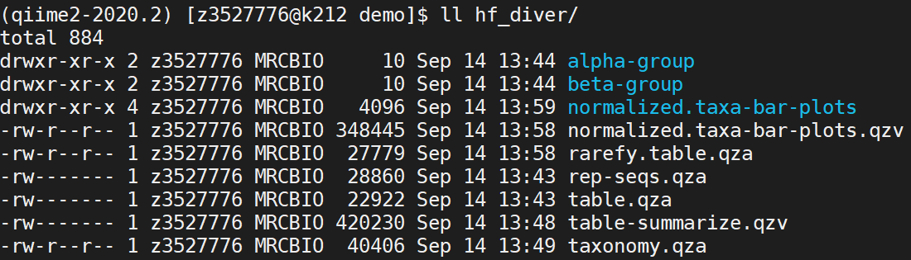
If you download file 'normalized.taxa-bar-plots.qzv' locally then upload to qiime2 view, the visualization should be look like this. 'Taxonomic Level', 'Color Palette' and 'Sort Samples By' all can be manully modified.
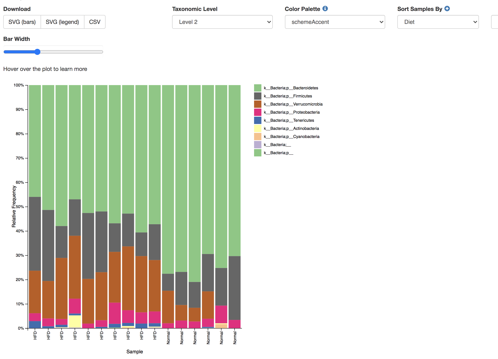
Phylogenetic tree construction
Overview
Teaching: 10 min Exercises: 0 min
Objectives
- Understand what is a phylogenetic tree and the purpuse of why we need this
- Finish the commands to generate rooted tree
In order to generate the UniFrac distance, a phylogenetic tree should be build for all the representative feature sequences
xxxxxxxxxx#constructing phylogenetic treesingularity exec -B /scratch /data/bio/workshop/mrcmicrobiome.sif bash -c '. activate qiime2-2020.8 && \qiime alignment mafft \ --i-sequences hf_diver/rep-seqs.qza \ --o-alignment hf_diver/aligned-rep-seqs.qza' singularity exec -B /scratch /data/bio/workshop/mrcmicrobiome.sif bash -c '. activate qiime2-2020.8 && \qiime alignment mask \ --i-alignment hf_diver/aligned-rep-seqs.qza \ --o-masked-alignment hf_diver/masked-aligned-rep-seqs.qza' singularity exec -B /scratch /data/bio/workshop/mrcmicrobiome.sif bash -c '. activate qiime2-2020.8 && \qiime phylogeny fasttree \ --i-alignment hf_diver/masked-aligned-rep-seqs.qza \ --o-tree hf_diver/unrooted-tree.qza --p-n-threads 1'singularity exec -B /scratch /data/bio/workshop/mrcmicrobiome.sif bash -c '. activate qiime2-2020.8 && \qiime phylogeny midpoint-root \ --i-tree hf_diver/unrooted-tree.qza \ --o-rooted-tree hf_diver/rooted-tree.qza'Four files 'aligned-rep-seqs.qza', 'masked-aligned-rep-seqs.qza', 'unrooted-tree.qza' and 'rooted-tree.qza' are generated sequentially. The rooted-tree.qza will be used in the core diversity analysis
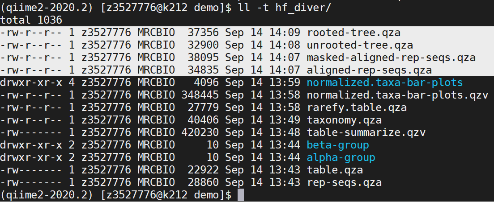
Run the core diversity analysis
Overview
Teaching: 10 min Exercises: 0 min
Objectives
- Understand the output for the core diversity analysis
- Checking the results for PcoA with different beta diversity distance
Sometimes we need to filter samples by the meta data to select part of the samples for analysis
xxxxxxxxxxsingularity exec /data/bio/workshop/mrcmicrobiome.sif bash -c '. activate qiime2-2020.8 && \qiime feature-table filter-samples \ --i-table hf_diver/table.qza \ --m-metadata-file meta_data.txt \ --o-filtered-table hf_diver/core.table.qza'core diversity with phylogenetic information
xxxxxxxxxxsingularity exec /data/bio/workshop/mrcmicrobiome.sif bash -c '. activate qiime2-2020.8 && \qiime diversity core-metrics-phylogenetic \ --i-phylogeny hf_diver/rooted-tree.qza \ --i-table hf_diver/core.table.qza \ --p-sampling-depth 800 \ --m-metadata-file meta_data.txt \ --output-dir hf_diver/core-metrics-results'One files 'core.table.qza' and one filder 'core-metrics-results', which has the core diversity analysis outputs, are generated sequentially. This step generate alpha diversity indexes such a Shannon, observed features, jaccard, evenness, and faith phylogenetic distance data and plot. The beta diversity of PcoA such as bray-curtis distance, weighted and unweighted UniFrac distance.
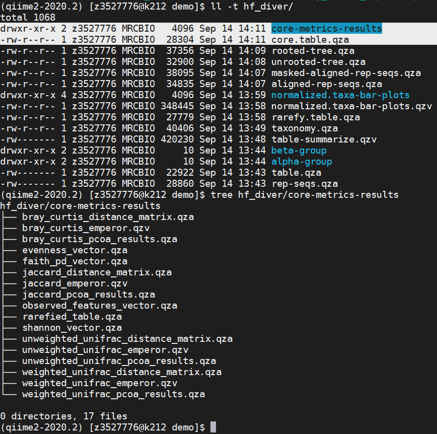d
Check alpha diversity contents, shannon vector for example
xxxxxxxxxxsingularity exec /data/bio/workshop/mrcmicrobiome.sif bash -c '. activate qiime2-2020.8 && \qiime tools export \ --input-path hf_diver/core-metrics-results/shannon_vector.qza \ --output-path hf_diver/core-metrics-results/shannon_vector'Look into the output file
xxxxxxxxxxhead -4 hf_diver/core-metrics-results/shannon_vector/alpha-diversity.tsv#output: shannon_entropy5821_S50_L001 4.2847752383610435822_S34_L001 4.4921808415334245824_S96_L001 4.474363582402979Check PcoA plot for bray-curtis distance and weighted unifrac distance
Decompress the qzv file and visulize at local computer or donwload qzv file and upload to qiime2 view for visulization
xxxxxxxxxxsingularity exec /data/bio/workshop/mrcmicrobiome.sif bash -c '. activate qiime2-2020.8 && \qiime tools export \ --input-path hf_diver/core-metrics-results/weighted_unifrac_emperor.qzv \ --output-path hf_diver/core-metrics-results/weighted_unifrac_emperor'If you download file 'bray_curtis_emperor.qzv' locally then upload to qiime2view, the visualization should be look like this. (Red is high fat diet samples and blue are healthy)

If you download file 'weighted_unifrac_emperor.qzv' locally then upload to qiime2 view, the visualization should be look like this.

Now check all the other alpha diversity index and beta diveristy PcoA results 5 minutes given
Alpha diversity rarefaction curve
Overview
Teaching: 5 min Exercises: 0 min
Objectives
- Understand the meaning of rarefaction curve
- Generating rarefaction curve with qiime diversity plugin
xxxxxxxxxxsingularity exec /data/bio/workshop/mrcmicrobiome.sif bash -c '. activate qiime2-2020.8 && \qiime diversity alpha-rarefaction \ --i-table hf_diver/table.qza \ --i-phylogeny hf_diver/rooted-tree.qza \ --p-max-depth 800 \ --m-metadata-file meta_data.txt \ --o-visualization hf_diver/alpha-rarefaction.qzv'A file 'alpha-rarefaction.qzv' is created.
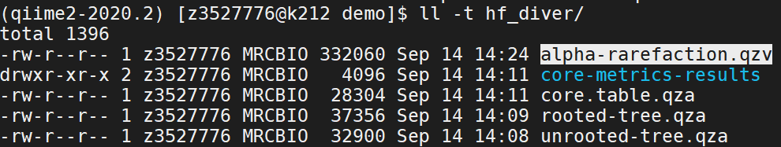
If you download file 'alpha-rarefaction.qzv' locally then upload to qiime2 view, the visualization should be look like this. 'Metric' has options (1) observed_features, (2) shannon and (3) faith_pd.
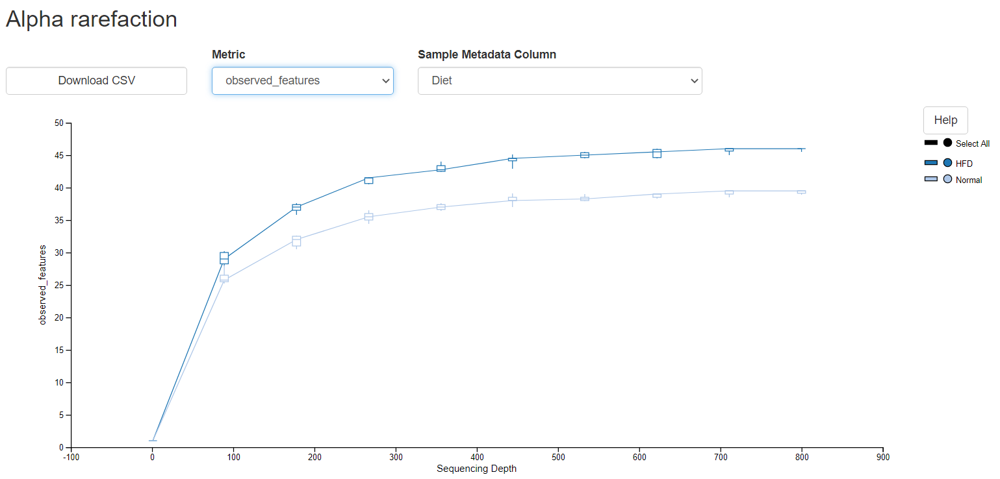
PERMANOVA statistical testing of alpha and beta diversity with meta data
Overview
Teaching: 10 min Exercises: 0 min
Objectives
- Understand PERMANONA testing for group significance
- Identifying the most significant influential meta data that associated with microbial alpha and beta diversity
PERMANOVA statistical testing of alpha diversity for groups
Faith_ph
xxxxxxxxxxsingularity exec /data/bio/workshop/mrcmicrobiome.sif bash -c '. activate qiime2-2020.8 && \qiime diversity alpha-group-significance \ --i-alpha-diversity hf_diver/core-metrics-results/faith_pd_vector.qza \ --m-metadata-file meta_data.txt \ --o-visualization hf_diver/alpha-group/faith-pd-group-significance.qzv'A file 'faith-pd-group-significance.qzv' is newly generated.
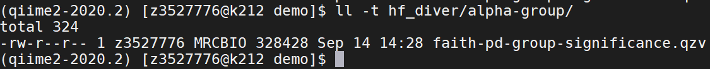
If you download file 'faith-pd-group-significance.qzv' locally then upload to qiime2 view, the visualization should be look like this.
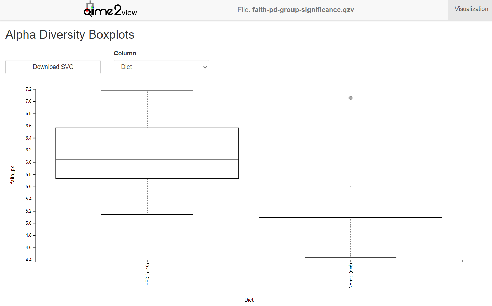
evenness
xxxxxxxxxxsingularity exec /data/bio/workshop/mrcmicrobiome.sif bash -c '. activate qiime2-2020.8 && \qiime diversity alpha-group-significance \ --i-alpha-diversity hf_diver/core-metrics-results/evenness_vector.qza \ --m-metadata-file meta_data.txt \ --o-visualization hf_diver/alpha-group/evenness-group-significance.qzv'A file 'evenness-group-significance.qzv' is newly generated.
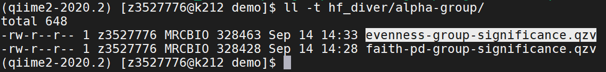
If you download file 'evenness-group-significance.qzv' locally then upload to qiime2 view, the visualization should be look like this.
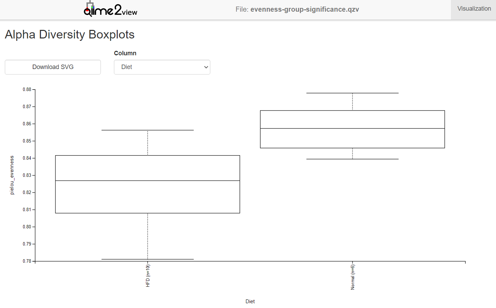
observed features
xxxxxxxxxxsingularity exec /data/bio/workshop/mrcmicrobiome.sif bash -c '. activate qiime2-2020.8 && \qiime diversity alpha-group-significance \ --i-alpha-diversity hf_diver/core-metrics-results/observed_features_vector.qza \ --m-metadata-file meta_data.txt \ --o-visualization hf_diver/alpha-group/observed_features_vector.qzv'A file 'observed_features_vector.qzv' is newly generated.
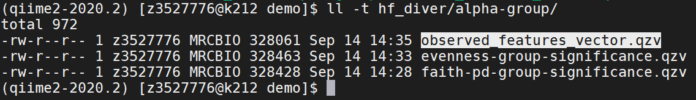
If you download file 'observed_features_vector.qzv' locally then upload to qiime2 view, the visualization should be look like this.
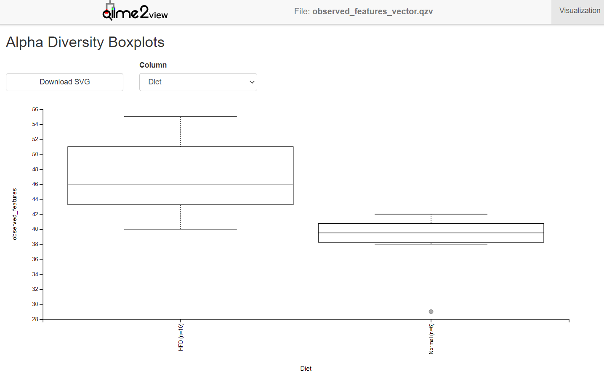
shannon index
xxxxxxxxxxsingularity exec /data/bio/workshop/mrcmicrobiome.sif bash -c '. activate qiime2-2020.8 && \qiime diversity alpha-group-significance \ --i-alpha-diversity hf_diver/core-metrics-results/shannon_vector.qza \ --m-metadata-file meta_data.txt \ --o-visualization hf_diver/alpha-group/shannon_vector.qzv'A file 'shannon_vector.qzv' is newly generated.
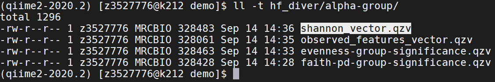
If you download file 'shannon_vector.qzv' locally then upload to qiime2 view, the visualization should be look like this.
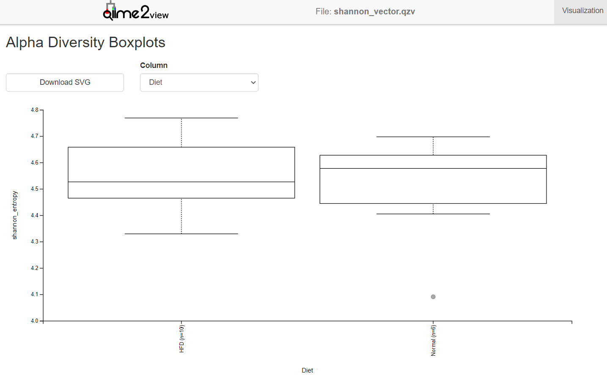
Output alpha diversity values from qiime2 output
xxxxxxxxxxsingularity exec /data/bio/workshop/mrcmicrobiome.sif bash -c '. activate qiime2-2020.8 && \qiime tools export \ --input-path hf_diver/alpha-group/shannon_vector.qzv \ --output-path hf_diver/alpha-group/shannon_vector'A folder 'shannon_vector' is newly generated. You can download the whole directory to your local pc or laptap and open the file 'index.html' to visualize.
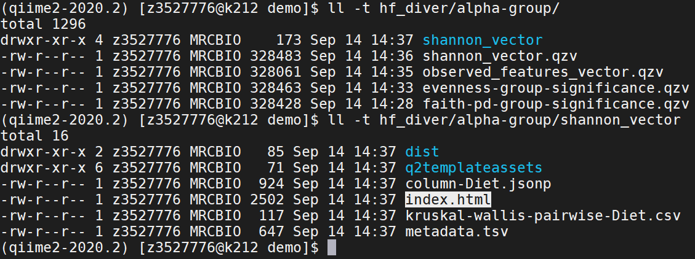
PERMANOVA statistical testing of beta diversity for groups
Bray curtis distance on diet
xxxxxxxxxxsingularity exec /data/bio/workshop/mrcmicrobiome.sif bash -c '. activate qiime2-2020.8 && \qiime diversity beta-group-significance \ --i-distance-matrix hf_diver/core-metrics-results/bray_curtis_distance_matrix.qza \ --m-metadata-file meta_data.txt \ --m-metadata-column "Diet" \ --o-visualization hf_diver/beta-group/Diet.bray_curtis.qzv --p-pairwise'A file 'Diet.bray_curtis.qzv' is newly generated.
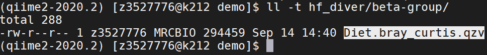
If you download file 'Diet.bray_curtis.qzv' locally then upload to qiime2 view, the visualization should be look like this.
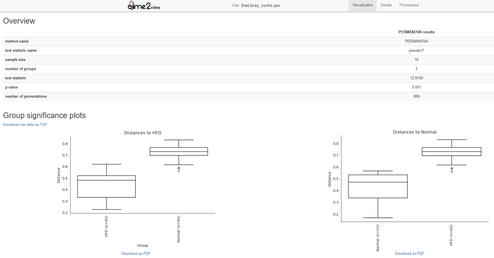
Jaccard distance
xxxxxxxxxxsingularity exec /data/bio/workshop/mrcmicrobiome.sif bash -c '. activate qiime2-2020.8 && \qiime diversity beta-group-significance \ --i-distance-matrix hf_diver/core-metrics-results/jaccard_distance_matrix.qza \ --m-metadata-file meta_data.txt \ --m-metadata-column "Diet" \ --o-visualization hf_diver/beta-group/Diet.jaccard.qzv --p-pairwise'A file 'Diet.jaccard.qzv' is newly generated.
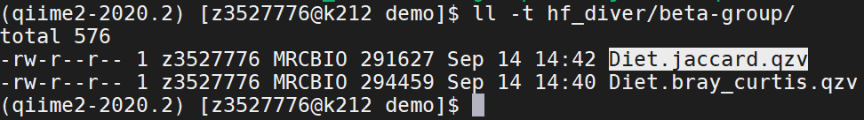
If you download file 'Diet.jaccard.qzv' locally then upload to qiime2 view, the visualization should be look like this.
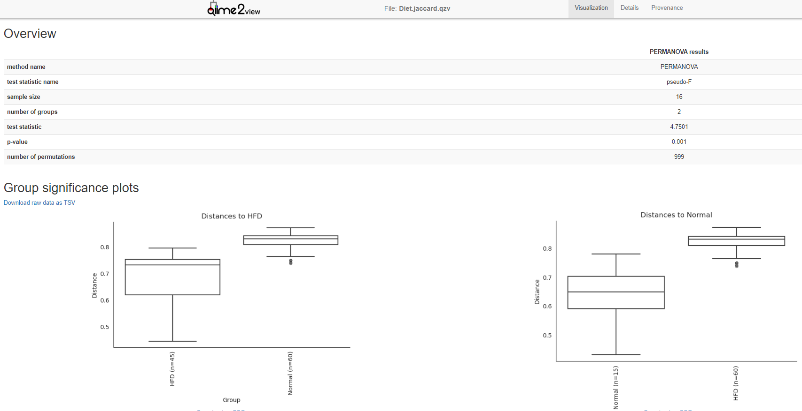
Unweighted UniFrac distacne
xxxxxxxxxxsingularity exec /data/bio/workshop/mrcmicrobiome.sif bash -c '. activate qiime2-2020.8 && \qiime diversity beta-group-significance \ --i-distance-matrix hf_diver/core-metrics-results/unweighted_unifrac_distance_matrix.qza \ --m-metadata-file meta_data.txt \ --m-metadata-column "Diet" \ --o-visualization hf_diver/beta-group/Diet.unweighted_unifrac.qzv --p-pairwise'A file 'Diet.unweighted_unifrac.qzv' is newly generated.
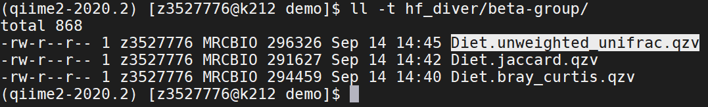
If you download file 'Diet.unweighted_unifrac.qzv' locally then upload to qiime2 view, the visualization should be look like this.
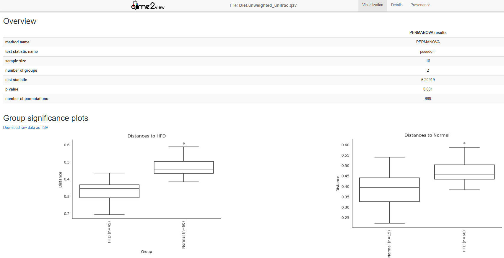
Weighted UniFrac distacne
xxxxxxxxxxsingularity exec /data/bio/workshop/mrcmicrobiome.sif bash -c '. activate qiime2-2020.8 && \qiime diversity beta-group-significance \ --i-distance-matrix hf_diver/core-metrics-results/weighted_unifrac_distance_matrix.qza \ --m-metadata-file meta_data.txt \ --m-metadata-column "Diet" \ --o-visualization hf_diver/beta-group/Diet.weighted_unifrac.qzv --p-pairwise'A file 'Diet.weighted_unifrac.qzv' is newly generated.
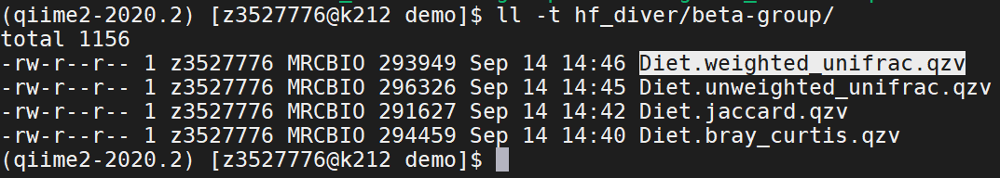
If you download file 'Diet.weighted_unifrac.qzv' locally then upload to qiime2 view, the visualization should be look like this.
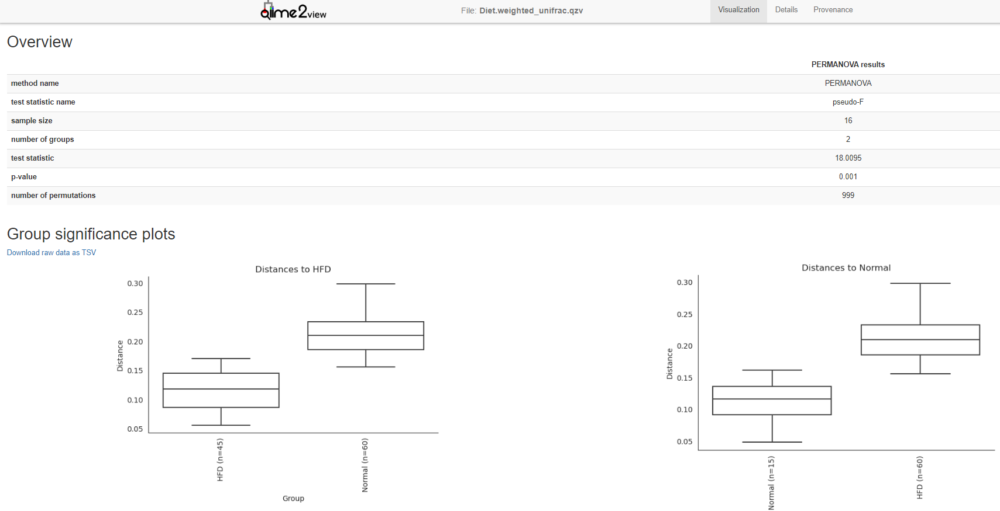
Decompress visulization qzv file and download to local computer to check the results
xxxxxxxxxxsingularity exec /data/bio/workshop/mrcmicrobiome.sif bash -c '. activate qiime2-2020.8 && \qiime tools export \ --input-path hf_diver/beta-group/Diet.weighted_unifrac.qzv \ --output-path hf_diver/beta-group/Diet.weighted_unifrac' A folder 'Diet.weighted_unifrac' is newly generated. You can download the whole directory to your local pc or laptap and open the file 'index.html' to visualize.

4. Using LEfSe to identify differential abundant taxa
Overview
Teaching: 20 min Exercises: 0 min
Objectives
- Understand how LEfSe identify microbial signatures
- Identify differential abundant taxa in the high fat diet mouse
xxxxxxxxxxsingularity exec /data/bio/workshop/mrcmicrobiome.sif bash -c '. activate qiime2-2020.8 && perl /home/applications/mima/mima_lefsetable_16s.pl hf_diver/rarefy.table.qza hf_diver/taxonomy.qza Diet meta_data.txt hf_lefse_tables 'LEfSe outputs are in directory 'hf_lefse_tables', this step will generate input file of differnt ranks and merge all 7 ranks taxa into one file to be used in the following step to draw clade plot and bar plot of LDA scores.
For a regular tab seperated table to do LEfSe analysis, the following pipeline can be used Check the help information for the pipeline
xxxxxxxxxxsingularity exec /data/bio/workshop/mrcmicrobiome.sif bash -c '. activate lefse-conda && perl /home/applications/mima/mima_lefse_pipeline.pl ' -i table.tsv, the rarefied feature table used to do LEfSe -m meta datafile, a table with rows as sample and column as differnt meta data -g group vector should be column_name:group1,group2,group3 #the detail groups in one column to compare -o output dir/ string -f prefix to the output file, string format -d LDA schore forcut off default 2 -x width of figure default 8 inch -y height of figure default 8 inch -h print this help information Here in this example, we would like to identify the differential abundant taxa that enriched in high fat diet mouse.
xxxxxxxxxxsingularity exec /data/bio/workshop/mrcmicrobiome.sif bash -c '. activate lefse-conda && perl /home/applications/mima/mima_lefse_pipeline.pl -i hf_lefse_tables/lefse_allrank/merge_taxonomy.csv -m meta_data.txt -g Diet:Normal,HFD -o hf_lefsenew -f dietlefse -d 3'cladoplot presenting of signatures
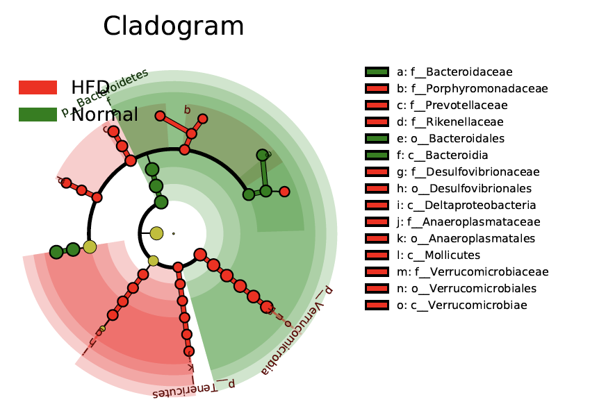
LEfSe signatures barchart
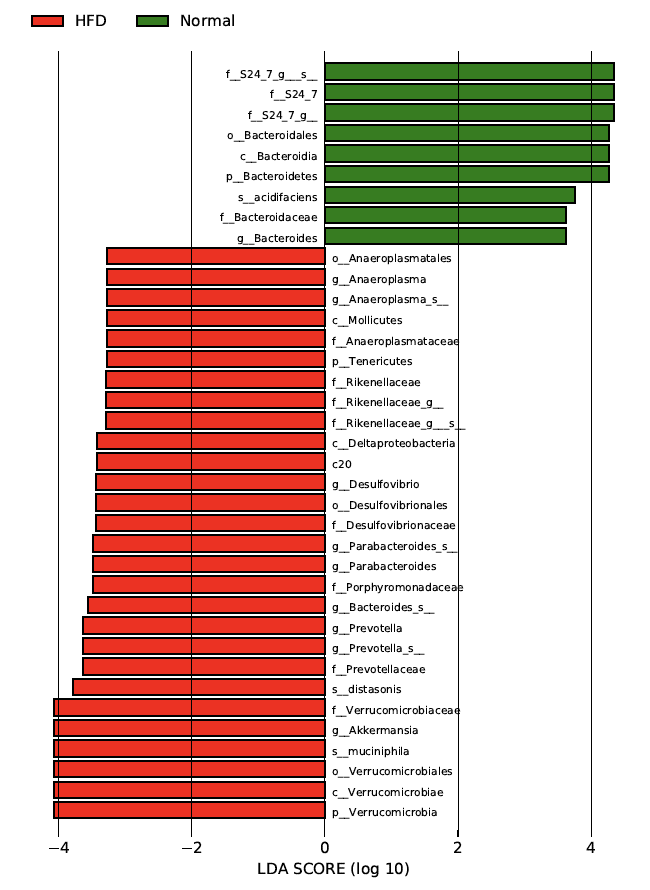
Congratulations!
The copyright of qiime2 and LEfSe belongs to the developing team. The singularity version of pipeline is develped by MRC Bioinformatics team.